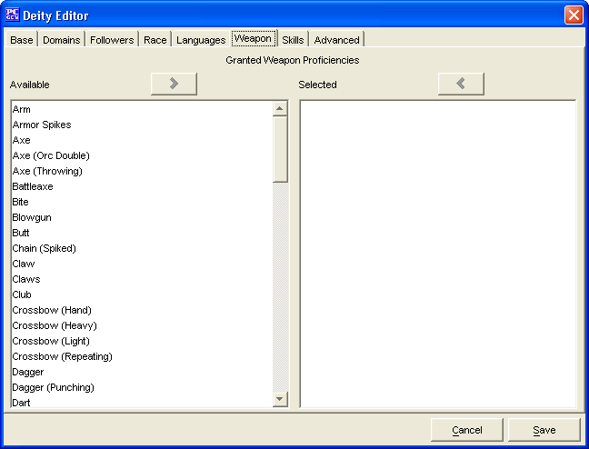

Deity Editor: Weapons Tab

The
Weapons Tab
is used choose which weapon
proficiencies are granted to followers of the deity.
The two
Granted Weapon Proficiencies
windows,
Available
and
Selected
are used
to create a list of weapon proficiencies granted to the deity's
followers.
-
The names in the
Available
window are drawn
from whichever sources were loaded into PCGen. (i.e. If you have
SRD and Soveriegn Stone loaded as sources, then weapon
proficiencies from both sources will appear in the window.)
-
The
Add
and
Remove
buttons
will move the highlighted weapon proficiency name between the 2
windows, as will double clicking on a weapon proficiency name.
The
Cancel
and
Save
buttons,
which appear on every tab, are used to either cancel the deity
creation or save it to the customdeities.lst file.